콘크리트산업기사 (2015-05-31 기출문제)
1과목: 콘크리트재료 및 배합
1. 콘크리트에 사용되는 혼화제에 관하여 옳지 않은 것은?
- AE제는 공기연행제로 동결융해에 대한 저항성을 향상시킨다.
- 고성능 AE감수제는 공기연행 작용 및 시멘트 분산작용을 대폭적으로 증대시켜 우수한 유동성과 슬럼프 유지능력을 가진 혼화제이다.
- 유동화제는 분산효과가 크고 슬럼프 경시변화가 적은 특성이 있다.
- 수축저감제는 모세관수의 표면장력을 저하시켜 건조수축을 저감하는 특성이 있다.
(정답률: 64%)

2. 골재의 단위용적질량 시험에 대한 설명으로 틀린 것은?
- 시료를 채우는 방법은 충격에 의한 방법을 사용함을 원칙으로 하지만, 시료 손상의 우려가 있는 경우에 한하여 봉다지기 방법을 사용한다.
- 시료는 절건 상태로 하여야 하나, 굵은 골재의 경우는 기건 상태이어도 좋다.
- 단위 용적 질량의 측정은 규정된 방법으로 용기에 시료를 채우고 골재의 표면을 고른 후, 용기 안의 시료의 질량을 측정한다.
- 시험은 동시에 채취한 시료에 대하여 2회 실시한다.
(정답률: 52%)
3. 콘크리트 배합에 관한 일반적인 내용에 대한 설명으로 옳은 것은?
- 잔골재율을 크게 하면 소요의 공기량을 확보하기 위한 AE제의 사용량은 많아진다.
- 강자갈과 부순자갈을 혼합한 굵은골재에서 부순자갈의 혼합률을 크게 하면 소요의 슬럼프를 얻기 위한 단위수량은 작아진다.
- 잔골재를 조립률이 큰 것으로 바꾸어 사용하면 동등의 워커빌리티를 확보하기 위한 잔골재율은 커진다.
- 굵은 골재를 실적률이 작은 것으로 바꾸어 사용하면 동등의 워커빌리티를 확보하기 위한 잔골재율은 작아진다.
(정답률: 55%)
4. 콘크리트용 혼화재료 중 실리카 퓸에 대한 설명으로 틀린 것은?
- 실리카 퓸을 사용하면 단위수량을 감소시킬 수 있고, 건조수축이 줄어든다.
- 실리카 퓸을 사용하면 재료분리 저항성, 수밀성 등이 향상된다.
- 실리카 퓸을 사용하면 알칼리 골재반응의 억제효과 및 강도증가 등을 기대할 수 있다.
- 각종 실리콘이나 훼로 실리콘 등의 규소합금을 전기아크식 노에서 제조할 때 배출되는 가스에 부유하여 발생하는 부산물의 총칭이다.
(정답률: 64%)
5. 실제 사용한 콘크리트의 40회 압축강도 시험으로부터 압축강도(MPa)잔차의 제곱을 구하여 합한 값이 624 이었다. 콘크리트의 배합강도를 결정하기 위한 압축강도의 표준편차를 구하면?
- 3.0MPa
- 3.5MPa
- 4.0MPa
- 4.5MPa
(정답률: 69%)
6. 굵은 골재의 최대치수가 20mm인 시료로 밀도 및 흡수율 시험(KS F 2503)을 실시하고자 한다. 1회 시험에 사용하는 시료의 최소 질량으로 옳은 것은? (단, 보통 골재를 사용한다.)
- 1kg
- 2kg
- 3kg
- 4kg
(정답률: 66%)
7. 잔골재의 밀도 및 흡수율시험에서 다음과 같은 데이터를 얻었을 때 흡수율(%)은?
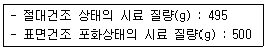
- 1.01%
- 1.54%
- 2.50%
- 3.84%
(정답률: 86%)
8. 다음의 시멘트 중에서 해안가 혹은 해수와 접하는 곳의 철근콘크리트 구조물 공사에 가장 적합한 것은?
- 보통 포틀랜드 시멘트
- 저발열시멘트
- 중용열 포틀랜드 시멘트
- 조강 포틀랜드 시멘트
(정답률: 65%)
9. 잔골재율(S/a)이 47.5%, 단위골재의 절대용적이 700ℓ, 잔골재의 표건밀도가 2.62g/cm3일 때 단 위잔골재량은?
- 325kg/m3
- 534kg/m3
- 725kg/m3
- 871kg/m3
(정답률: 42%)
10. 다음 중 시멘트의 분말도를 구하기 위한 시험은?
- 모르타르 바 시험
- 블레인 공기 투과 장치에 의한 시험
- 오토클레이브 시험
- 비카트 침에 의한 시험
(정답률: 58%)
11. 체가름 시험결과 잔골재 조립률 2.65, 굵은 골재 조립률 7.38 이며 잔골재 대 굵은 골재비를 1:1.6으로 할 때 혼합골재의 조립률은?
- 4.56
- 5.56
- 6.56
- 7.56
(정답률: 72%)
12. 콘크리트 설계기준압축강도가 25MPa이고 30회 이상의 압축강도 시험 실적으로부터 구한 표준 편차가 3.5MPa이라면 배합강도는?
- 29.7MPa
- 31.6MPa
- 33.9MPa
- 35.0MPa
(정답률: 39%)
13. 콘크리트용 플라이 애시의 품질을 평가하기 위한 시험 항목으로 적합하지 않은 것은?
- 밀도
- 비표면적(브레인 방법)
- 활성도 지수
- 염기도
(정답률: 69%)
14. 알루미나 시멘트의 특성에 관한 다음 설명 중 옳지 않은 것은?
- 포틀랜드 시멘트에 비하여 빨리 응결하는 특성을 갖는다.
- 응결 및 경화시 발열량이 적다.
- 화학적 저항성이 크고 내구성도 크나 가격이 고가이다.
- 내화성이 우수하므로 내화물용으로 사용된다.
(정답률: 79%)
15. 다음 혼화제중 콘크리트의 배합수량에 미치는 영향이 가장 적은 것은?
- 감수제
- AE제
- 유동화제
- 급결제
(정답률: 60%)
16. 콘크리트 배합설계에서 단위시멘트량이 390kg, 단위수량이 185kg, 공기량이 3%라면 단위골재량의 절대용적은? (단, 시멘트 밀도는 3.15g/cm3이다.)
- 532ℓ
- 612ℓ
- 661ℓ
- 7⑤ℓ
(정답률: 52%)
17. 콘크리트의 배합에 있어서 단위시멘트량에 관한 일반적인 설명으로 옳지 않은 것은?
- 단위시멘트량이 증가하면 슬럼프가 저하한다.
- 단위시멘트량이 증가하면 수화열이 증가한다.
- 단위시멘트량이 증가하면 강도가 증가한다.
- 단위시멘트량이 증가하면 공기량이 증가한다.
(정답률: 71%)
18. 다음 중 골재의 모양으로 적합한 것은?
- 길고 가는 모양의 골재
- 둥글고 구형에 가까운 골재
- 얇은 판상의 부스러지는 골재
- 표면에 거칠고 모가난 골재
(정답률: 87%)
19. 포졸란 작용이 있는 혼화재가 아닌 것은?
- 규산질 미분말
- 규산백토
- 규조토
- 플라이애시
(정답률: 58%)
20. 콘크리트 배합설계시 물-결합재비를 결정할 때 고려하여야 할 사항으로 거리가 먼 것은?
- 소요의 강도
- 내구성
- 균열저항성
- 공기량
(정답률: 65%)
2과목: 콘크리트제조, 시험 및 품질관리
21. 콘크리트의 휨강도 시험에서 공시체에 하중을 가하는 속도로 옳은 것은?
- 가장자리 응력도의 증가율이 매초0.6±0.04MPa이 되도록 한다.
- 가장자리 응력도의 증가율이 매초0.6±0.4MPa이 되도록 한다.
- 가장자리 응력도의 증가율이 매초0.06±0.04MPa이 되도록 한다.
- 가장자리 응력도의 증가율이 매초0.06±0.4MPa이 되도록 한다.
(정답률: 68%)
22. 레디믹스트 콘크리트 공장의 선정 시 고려사항으로 거리가 먼 것은?
- 배출시간
- 콘크리트의 제조능력
- 운반차의 수
- 다른 공장과의 거리
(정답률: 71%)
23. 다음 용어에 대한 설명 중 그 내용이 잘못된 것은?
- 갇힌 공기 : 혼화제를 사용하지 않더라도 콘크리트 속에 자연적으로 포함되는 공기
- 골재의 실적률 : 단위질량을 밀도로 나눈 값의 백분율
- 자기수축 : 콘크리트가 건조하면서 체적이 감소하여 수축하는 현상
- 레이턴스 : 블리딩으로 인하여 콘크리트나 모르타르의 표면에 떠올라서 가라앉은 물질
(정답률: 49%)
24. 초기재령 콘크리트에 발생하기 쉬운 균열의 원인이 아닌 것은?
- 소성수축
- 황산염반응
- 수화열
- 소성침하
(정답률: 56%)
25. KS F 4009(레디믹스트 콘크리트)에서 정한 레디믹스트 콘크리트의 호칭강도에 포함되지 않는 것은?
- 27MPa
- 30MPa
- 37MPa
- 40MPa
(정답률: 66%)
26. 콘크리트의 블리딩 시험에 대한 설명으로 틀린 것은?
- 시험 중에는 실온 로 한다.
- 콘크리트를 채워 넣을 때 콘크리트의 표면이 용기의 가장자리에서 2cm정도 높아지도록 고른다.
- 기록한 처음 시각에서 60분 동안은 10분마다 콘크리트 표면에 스며나온 물을 빨아낸다.
- 물을 빨아내는 것을 쉽게 하기 위하여 2분 전에 두께 약 5cm의 블록을 용기의 한쪽 밑에 주의 깊게 괴어 용기를 기울이고, 물을 빨아낸 후 수평 위치로 되돌린다.
(정답률: 61%)
27. 콘크리트의 압축강도 시험결과에 대한 설명으로 틀린 것은?
- 재하속도가 빠르면 강도가 작아진다.
- 공시체의 단면에 요철이 있으면 강도가 실제보다 작아지는 경향이 있다.
- 공시체의 치수가 클수록 강도는 작게 된다.
- 시험 직전에 공시체를 건조시키면 일시적으로 강도가 증대한다.
(정답률: 66%)
28. 다음 그림과 같은 콘크리트의 쪼갬 인장강도시험에서 인장강도(fsp)를 구하는 공식으로 옳은 것은? (단, 공시체의 직경은 d, 최대 하중은 P, 공시체의 길이는 L, 원주율은 π이다.)
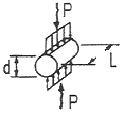
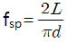
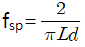
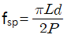
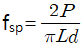
(정답률: 71%)
29. 콘크리트 재료의 계량에 대한 설명으로 틀린 것은?
- 계량은 시방 배합에 의해 실시하는 것으로 한다.
- 각 재료는 1배치씩 질량으로 계량하여야 한다. 단, 물과 혼화제 용액은 용적으로 계량해도 좋다.
- 유효 흡수율의 시험에서 골재에 흡수시키는 시간은 실용상으로 보통 15~30분간의 흡수율을 유효 흡수율로 보아도 좋다.
- 혼화제를 녹이는데 사용하는 물이나 혼화제를 묽게 하는데 사용하는 물은 단위수량의 일부로 보아야한다.
(정답률: 59%)
30. 콘크리트의 워커빌리티 및 반죽질기에 영향을 주는 요소에 대한 설명으로 틀린 것은?
- AE제나 감수제에 의해 콘크리트 중에 연행된 미세한 기포는 볼베어링 작용을 하여 콘크리트의 워커빌리티를 개선시킨다.
- 비빔이 불충분하고 불균질한 상태의 콘크리트는 워커빌리티가 나쁘다.
- 일반적으로 분말도가 높은 시멘트의 경우에는 시멘트 풀의 점성이 높아지므로 반죽질기는 작게 된다.
- 일반적으로 콘크리트의 비빔온도가 높을수록 반죽질기는 향상되는 경향이 있다.
(정답률: 64%)
31. 품질관리의 7가지 도구 중 아래의 표에서 설명하고 있는 것은?
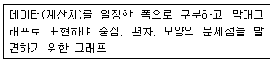
- 파레토도
- 산포도
- 히스토그램
- 층별
(정답률: 80%)
32. 굳지 않은 콘크리트의 워커빌리티 측정법 중 포장콘크리트와 같이 평면으로 타설된 콘크리트의 반죽질기를 측정하는 데 편리한 측정법은?
- 구관입시험
- 비비시험
- 리몰딩시험
- 흐름시험
(정답률: 46%)
33. 다음 중 부착강도에 대한 설명으로 틀린 것은?
- 부착강도는 철근의 종류 및 지름, 콘크리트 속에 묻힌 철근의 위치와 방향, 묻힌 길이, 콘크리트의 피복두께 및 콘크리트 품질 등에 따라 달라진다.
- 조건이 일정한 경우 콘크리트의 압축강도나 인장강도가 커질수록 부착강도는 감소한다.
- 이형철근의 부착강도가 원형철근의 부착강도 보다 크다.
- 철근을 콘크리트 속에 수평으로 매입하면 콘크리트 중의 입자의 침하나 블리딩에 의하여 철근 하부에 수막 및 공극이 생겨 부착강도가 저하한다.
(정답률: 59%)
34. 관리도에서 데이터, 즉 측정값의 특성에 따라서 계량값 관리도와 계수값 관리도로 나눌 수 있다. 이중 계량값 관리도의 적용이론은?
- 정규 분포이론
- 이항 분포이론
- 카이자승 분포이론
- 푸아송 분포이론
(정답률: 63%)
35. 콘크리트의 크리프에 대한 설명으로 틀린 것은?
- 하중이 실릴 때의 콘크리트의 재령이 클수록 크리프는 작게 일어난다.
- 물-시멘트비가 큰 콘크리트는 물-시멘트비가 작은 콘크리트보다 크리프가 크게 일어난다.
- 크리프 변형의 증가비율은 시간의 경과와 더불어 급격히 증가한다.
- 콘크리트가 놓이는 주위의 온도가 높을수록 크리프 변형은 커진다.
(정답률: 39%)
36. 콘크리트 구조물의 비파괴시험법의 적용에 대한 설명으로 틀린 것은?
- 콘크리트의 중성화 깊이를 추정하기 위하여 중성자법을 이용한다.
- 콘크리트의 균열 깊이를 추정하기 위하여 초음파법을 이용한다.
- 콘크리트 중의 철근위치를 파악하기 위하여 전자유도법을 이용한다.
- 콘크리트의 압축강도를 추정하기 위하여 반발경도법을 이용한다.
(정답률: 56%)
37. 콘크리트의 각 재료의 계량허용오차로 옳은 것은?
- 물 : ±2%
- 시멘트 : ±2%
- 골재 : ±2%
- 혼화재 : ±2%
(정답률: 66%)
38. 보통 포틀랜드 시멘트를 사용한 콘크리트의 압축강도(MPa)를 측정한 결과가 아래의 표와 같을 때 범위(R)을 구하면?
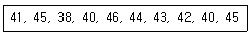
- 42.4MPa
- 40MPa
- 8MPa
- 2.6MPa
(정답률: 57%)
39. 콘크리트의 품질관리 계획을 작성할 때의 고려사항에 대한 설명으로 틀린 것은?
- 적합한 품질검사 방법을 선택
- 품질관리를 위한 체계적 교육 및 훈련 계획수립
- 품질관리를 행하기 위한 구체적 실행계획을 작성
- 어느 공사에도 맞는 획일적인 품질관리 방침 작성
(정답률: 62%)
40. 비비기 시간에 대한 사전 실험을 실시하지 않은 경우 강제식 믹서를 사용할 때의 비비기 시간은 믹서 안에 재료를 투입한 후 몇 초 이상을 표준으로 하는가?
- 30초
- 60초
- 90초
- 120초
(정답률: 71%)
3과목: 콘크리트의 시공
41. 고강도 콘크리트의 시공에 대한 설명으로 틀린 것은?
- 고강도콘크리트는 높은 물 - 결합재비를 가지므로 오토클레이브 양생을 실시하여야 한다.
- 콘크리트 운반 차량은 운반 지연으로 인한 급격한 슬럼프 값 저하 가능성에 대비하여 고성능 감수제 투여장치등의 보조 장치를 준비하여야 한다.
- 운반 시간 및 거리가 긴 경우에 사용하는 운반차는 트럭 믹서, 트럭 애지테이터 혹은 건비빔 믹서로 하여야 한다.
- 기둥과 벽체 콘크리트, 보와 슬래브 콘크리트를 일체로 하여 타설할 경우는 보 아래 면에서 타설을 중지한 다음, 기둥과 벽에 타설한 콘크리트가 침하한 후 보, 슬래브의 콘크리트를 타설하여야 한다.
(정답률: 50%)
42. 수중 콘크리트의 배합에 대한 설명으로 틀린 것은?
- 일반 수중 콘크리트의 물 - 결합재비는 50% 이하를 표준으로 한다.
- 현장 타설말뚝 및 지하연속벽에 사용하는 수중 콘크리트의 물 - 결합재비는 45% 이하를 표준으로 한다.
- 일반 수중 콘크리트 단위 시멘트량은 370kg/m3 이상을 표준으로 한다.
- 현장타설말뚝 및 지하연속벽에 사용하는 수중 콘크리트의 단위시멘트량은 350kg/m3이상을 표준으로 한다.
(정답률: 39%)
43. 다음 중 습윤양생방법에 포함되지 않는 것은?
- 상압 증기양생
- 수중양생
- 막양생
- 젖은 포에 의한 양생
(정답률: 43%)
44. 팽창콘크리트의 품질과 관련하여 틀린 것은?
- 콘크리트의 팽창률은 재령 28일에 대한 시험치를 기준으로 한다.
- 수축보상용 콘크리트의 팽창률은 150×10-6이상, 250×10-6이하인 값을 표준으로 한다.
- 화학적 프리스트레스용 콘크리트의 팽창률은 200×10-6이상, 700×10-6이하인 값을 표준으로 한다.
- 팽창콘크리트의 강도는 일반적으로 재령 28일의 압축강도를 기준으로 한다.
(정답률: 50%)
45. 수밀 콘크리트의 배합에 대한 설명으로 틀린 것은?
- 단위 굵은 골재량은 되도록 크게 한다.
- 콘크리트의 소요 슬럼프는 되도록 적게하여 180mm를 넘지 않도록 한다.
- 공기연행감수제 또는 고성능 공기연행감수제를 사용하는 경우라도 공기량은 4% 이하가 되게 한다.
- 물 - 결합재비는 55% 이하를 표준으로 한다.
(정답률: 68%)
46. 유동화 콘크리트에 대한 설명으로 틀린 것은?
- 유동화 콘크리트의 슬럼프 증대량은 100mm 이상으로 하는 것이 바람직하다.
- 유동화 콘크리트를 제조할 때 유동화제를 첨가하기 전의 기본 배합의 콘크리트를 베이스 콘크리트라 한다.
- 품질관리를 위해 유동화 콘크리트의 슬럼프 시험은 50m3마다 1회씩 실시하는 것을 표준으로 한다.
- 유동화 콘크리트의 재유동화는 원칙적으로 할 수 없다.
(정답률: 44%)
47. 속이 빈 원통형 콘크리트 제품의 제조에 사용하는 다짐방법 중 가장 정합한 방법은?
- 봉다짐
- 진동다짐
- 원심력다짐
- 가압성형다짐
(정답률: 75%)
48. 콘크리트 공장제품의 특징을 설명한 것으로 틀린 것은?
- 규격의 표준화가 되어있지 않아 실물 시험이 불가능하다.
- 숙력된 작업원에 의하여 안정된 품질에서 상시 제조가 가능하다.
- 재료 선정에서 배합, 제조설비, 시공까지 전반적인 관리가 가능하다.
- 형상이나 성형법에 따라 다양한 형상의 제품을 만들 수 있다.
(정답률: 78%)
49. 경량골재 콘크리트의 제조 및 시공에 대한 설명으로 틀린 것은?
- 경량골재 콘크리트의 단위질량 시험은 일반적으로 굳지 않은 콘크리트에 대하여 시험한다.
- 굵은 골재의 최대치수는 원칙적으로 20mm로 한다.
- 경량골재는 물을 흡수하기 쉬우므로 품질 변동을 막기 위하여 충분히 물을 흡수시킨 상태로 사용하는 것이 좋다.
- 경량골재 콘크리트의 공기량은 일반 골재를 사용한 콘크리트보다 작게 하는 것을 원칙으로 한다.
(정답률: 35%)
50. 고강도 콘크리트에 대한 설명으로 틀린 것은?
- 고강도 콘크리트는 수밀성 향상을 위하여 공기연행제를 사용하는 것을 원칙으로 한다.
- 고강도 콘크리트에 사용되는 굵은 골재의 최대 치수는 40mm 이하로서 가능한 25mm 이하로 한다.
- 경량골재 콘크리트에서는 설계기준 압축강도가 27MPa이상인 콘크리트를 고강도 콘크리트라고 한다.
- 고강도 콘크리트의 비비기에는 가경식 믹서보다 강제식 팬 믹서가 좋다.
(정답률: 66%)
51. 콘크리트 구조물은 변형이 구속되면 균열이 발생한다. 그래서 미리 어느 정해진 장소에 균열을 집중시킬 목적으로 소정의 간격으로 단면 결손부를 설치하여 균열을 강제적으로 생기게 하는 균열유발 이음을 설치하는 것이 좋다. 이러한 균열유발 이음의 간격 및 단면의 결손율에 대한 설명으로 옳은 것은?
- 균열유발 이음의 간격은 부재높이의 1배 이상에서 2배 이내 정도로 하고 단면의 결손율은 10%를 약간 넘을 정도로 하는 것이 좋다.
- 균열유발 이음의 간격은 부재높이의 1배 이상에서 2배 이내 정도로 하고 단면의 결손율은 20%를 약간 넘을 정도로 하는 것이 좋다.
- 균열유발 이음의 간격은 부재높이의 2배 이상에서 3배 이내 정도로 하고 단면의 결손율은 10%를 약간 넘을 정도로 하는 것이 좋다.
- 균열유발 이음의 간격은 부재높이의 2배 이상에서 3배 이내 정도로 하고 단면의 결손율은 20%를 약간 넘을 정도로 하는 것이 좋다.
(정답률: 52%)
52. 포장용 시멘트 콘크리트의 배합기준에서 공기연행 콘크리트의 공기량 옳은 것은?
- 1~3%
- 4~6%
- 7~9%
- 10~12%
(정답률: 63%)
53. 프리플레이스트 콘크리트에 사용하는 잔골재 조립률의 범위로 적합한 것은?
- 4.1~4.9
- 3.2~4.0
- 2.3~3.1
- 1.4~2.2
(정답률: 66%)
54. 매스콘크리트로 다루어야 하는 구조물 부재치수의 일반적인 표준에 대한 아래 문장의 ( )에 알맞은 수치는?
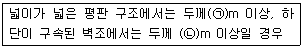
- ㉠ 0.5 ㉡ 0.8
- ㉠ 0.8 ㉡ 0.5
- ㉠ 0.5 ㉡ 1.0
- ㉠ 1.0 ㉡ 0.5
(정답률: 60%)
55. 해양 콘크리트 구조물에 쓰이는 콘크리트의 설계 기준 강도는 몇 MPa 이상으로 하여야 하는가? (단, 콘크리트 표준시방서의 규정을 따른다.)
- 20MPa
- 25MPa
- 30MPa
- 35MPa
(정답률: 59%)
56. 숏크리트 작업에 대한 설명으로 틀린 것은?
- 노즐은 뿜어 붙일 면에 직각이 되도록 뿜어 붙이는 것이 좋다.
- 숏크리트는 급결제를 첨가한 후 바로 뿜어 붙이기 작업을 하지 않는 것이 좋다.
- 소정의 두께가 될 때까지 반복해서 뿜어 붙여야 한다.
- 강재 지보재를 설치한 곳에 숏크리트를 실시할 경우에는 숏크리트와 강재 지보재가 일체가 되도록 하여야 한다.
(정답률: 64%)
57. 재령 24시간에서 숏크리트의 초기 압축강도 표준값은?
- 2~5MPa
- 5~10MPa
- 10~15MPa
- 15~20MPa
(정답률: 50%)
58. 일평균 기온이 10°C 이상, 15°C 미만인 경우 보통포틀랜드 시멘트를 사용한 콘크리트의 습윤양생 기간의 표준으로 옳은 것은?
- 3일
- 5일
- 7일
- 9일
(정답률: 68%)
59. 시공이음에 대한 설명으로 틀린 것은?
- 바닥틀과 일체로 된 기둥 또는 벽의 시공이음은 바닥틀과의 경계 부근에 설치하는 것이 좋다.
- 시공이음은 될 수 있는 대로 전단력이 적은 위치에 설치한다.
- 시공이음은 부재의 압축력이 작용하는 방향과 수평이 되게 설치한다.
- 수평시공이음부가 될 콘크리트 면은 경화가 시작되면 되도록 빨리 쇠솔이나 잔골재 분사 등으로 면을 거칠게 하며 충분히 습윤상태로 양생하여야 한다.
(정답률: 52%)
60. 유동화 콘크리트에서 베이스 콘크리트를 유동화 시키는 제조방식에 해당되지 않는 것은?
- 현장첨가 현장유동화 방식
- 공장첨가 현장유동화 방식
- 공장첨가 공장유동화 방식
- 배치플랜트첨가 유동화 방식
(정답률: 47%)
4과목: 콘크리트 구조 및 유지관리
61. 그림과 같은 콘크리트 보의 균열원인으로서 가장 관계가 깊은 것은?(문제 복원 오류로 그림이 없습니다. 정확한 그림 내용을 아시는분 께서는 오류신고 또는 게시판에 작성 부탁드립니다.)
- 과하중
- 수성균열
- 콘크리트 충전불량
- 부등침하
(정답률: 66%)
62. 굳지 않은 콘크리트에 발생하는 균열 중 침하균열에 대한 설명으로 틀린 것은?
- 사용한 철근의 직경이 작을수록 침하균열은 증가한다.
- 슬럼프가 큰 콘크리트를 사용하면 침하균열은 증가한다.
- 충분히 다짐을 하지 못한 콘크리트의 침하균열은 증가한다.
- 누수되는 거푸집이나 변형이 일어나기 쉬운 거푸집을 사용한 경우 침하균열은 증가한다.
(정답률: 72%)
63. 아래 그림과 같은 단철근직사각형 보의 공칭모멘트강도(Mn)는? (단, fck=24MPa, fy=400MPa)
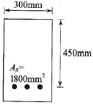
- 264.3kNㆍm
- 281.6kNㆍm
- 297.5kNㆍm
- 326.1kNㆍm
(정답률: 50%)
64. 탄소섬유 보강공법의 일반적인 시공 순서로 옳은 것은?
- 균열 보수 및 패칭 처리 → 프라이머 및 수지 도포 → 보호 코팅 → 섬유시트 부착
- 프라이머 및 수지 도포 → 균열 보수 및 패칭 처리 → 섬유시트 부착 → 보호 코팅
- 균열 보수 및 패칭 처리 → 프라이머 및 수지 도포 → 섬유시트 부착 → 보호 코팅
- 섬유시트 부착 → 균열 보수 및 패칭 처리 → 프라이머 및 수지 도포 → 보호 코팅
(정답률: 66%)
65. 철근 콘크리트의 휨설계에 대한 기본 가정에 관한 내용으로 틀린 것은?
- 철근과 콘크리트 변형률은 중립축으로부터의 거리에 비례한다.
- 변형 전에 평면인 단면은 변형 후에도 평면이다.
- 콘크리트 압축연단의 최대 변형률은 0.03으로 본다.
- 콘크리트의 인장강도는 무시한다.
(정답률: 45%)
66. 철근콘크리트 보의 설계시 모멘트 강도 계산에서 일반적으로 사용되는 블록의 형태는?
- 삼각형
- 직사각형
- 사다리꼴
- 마름모꼴
(정답률: 68%)
67. 구조물의 내화성을 증대시키기 위한 대책으로 틀린 것은?
- 내화성능이 약한 강재는 보호하여 피복두께를 충분히 취한다.
- 콘크리트 표면에 내화재료로 피복을 한다.
- 콘크리트 표면에 단열재료로 피복을 한다.
- 석영질 골재를 사용하여 콘크리트를 제작한다.
(정답률: 65%)
68. 다음과 같은 단철근 직사각형단면 보가 균형철근비를 가질 때 중립축까지의 거리 c는 얼마인가? (단, fck=28MPa, fy=400MPa, d=450mm)
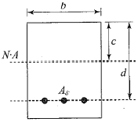
- 255mm
- 260mm
- 265mm
- 270mm
(정답률: 39%)
69. 콘크리트의 중성화에 관한 설명 중 틀린 것은?
- 공기 중의 탄산가스 농도가 높을수록 중성화 속도가 빨라진다.
- 콘크리트의 물-시멘트비가 낮으면 중성화 속도가 느려진다.
- 중성화 깊이는 경과시간에 반비례한다.
- 중성화 깊이가 철근 위치에 도달하면 철근 피복의 박리가 일어난다.
(정답률: 64%)
70. 철근콘크리트의 알칼리골재반응에 의한 열화메카니즘에 관한 설명으로 가장 적당한 것은?
- 알칼리골재반응은 콘크리트 중의 알칼리와 골재와의 반응으로 수분이 많으면 알칼리가 희석되어 반응이 작게 된다.
- 프리스트레스트 콘크리트 구조에서는 도입된 프리스트레스에 의해 알칼리 골재반응에 의한 균열을 방지할 수 있다.
- 알칼리골재반응은 타설 직후부터 팽창이 시작되어 재령에 따라 반응은 감소하고 거의 1년 정도에 멈춘다.
- 알칼리골재반응에 의한 균열은 망상으로 나타나는 경우가 많다.
(정답률: 64%)
71. 인장 이형철근 D32(db=31.8mm)를 정착시키는데 필요한 기본 정착길이(ldb)는? (단, 보통중량 콘크리트로서 fck=28MPa, fy=400MPa)
- 1,443mm
- 1,497mm
- 1,523mm
- 1,587mm
(정답률: 39%)
72. 아래 그림과 같은 단면을 가지는 단철근 직사각형보에 요구되는 최소 철근량(A8)은? (fck=28MPa, fy=400MPa)
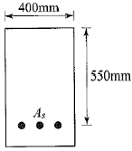
- 550mm
- 660mm
- 770mm
- 880mm
(정답률: 48%)
73. 콘크리트 구조설계에서 피로를 고려하지 않아도 되는 강재의 종류별 응력범위를 나타낸 것으로 틀린 것은?
- 이형철근(fy=300MPa) : 130MPa
- 이형철근(fy=400MPa) : 140MPa
- 긴장재(연결부 도는 정착부) : 140MPa
- 긴장재(기타부위) : 160MPa
(정답률: 54%)
74. 발생된 손상이 안정성에 심각한 영향을 주지 않는다고 판단되면 보수 조치를 행한다. 다음의 공법 중 보수 공법이 아닌 것은?
- 에폭시 주입공법
- 모르터 충전공법
- 표면피복공법
- 강판 접착공법
(정답률: 62%)
75. 1방향 철근콘크리트 슬래브에서 수축ㆍ온도 철근의 간격에 대한 설명으로 옳은 것은?
- 슬래브 두께의 3배 이하, 또는 450mm 이하로 하여야 한다.
- 슬래브 두께의 3배 이하, 또한 650mm 이하로 하여야 한다.
- 슬래브 두께의 5배 이하, 또한 450mm 이하로 하여야 한다.
- 슬래브 두께의 5배 이하, 또한 650mm 이하로 하여야 한다.
(정답률: 42%)
76. 콘크리트 구조설계에 사용되는 강도감소계수에 대한 설명으로 틀린 것은?
- 인장지배단면의 경우 0.85를 적용한다.
- 압축지배단면으로 나선철근으로 보강된 철근콘크리트 부재는 0.65를 적용한다.
- 전단력과 비틀림모멘트를 받는 부재는 0.75를 적용한다.
- 무근콘크리트의 휨모멘트를 받는 부재는 0.55를 적용한다.
(정답률: 59%)
77. 나선철근 기둥에서 축방향철근의 최소 개수로 옳은 것은?
- 5개
- 6개
- 7개
- 8개
(정답률: 69%)
78. 콘크리트 부재에 외부 케이블공법을 사용하여 보강하고자 할 때 적용하기 가장 부적합한 부재는?
- 벽체
- 보
- 기둥
- 슬래브
(정답률: 35%)
79. 다음 비파괴시험법 중 철근부식평가를 위한 시험으로 거리가 먼 것은?
- 자연전위법
- 전자파 레이더법
- 전기저항법
- 분극저항법
(정답률: 49%)
80. 균열의 폭을 측정할 수 있는 방법이 아닌 것은?
- 균열스케일
- 균열게이지
- 균열현미경
- 와이어스트레인 게이지
(정답률: 66%)